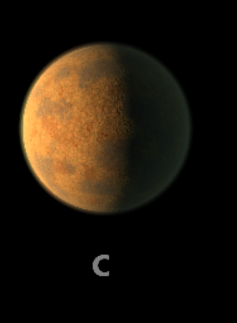

TRAPPIST-1 c

TRAPPIST-1 c es el segundo planeta del sistema. Es rocoso y tiene un tamaño cercano al de la Tierra.
Características
- Tipo: planeta rocoso.
- Periodo orbital: aproximadamente 2.42 días terrestres.
- Se encuentra cerca de su estrella.
- Su atmósfera ha sido estudiada con telescopios.
Dato interesante
Las observaciones del telescopio James Webb encontraron que probablemente no posee una atmósfera espesa rica en dióxido de carbono como la de Venus.
¿Podría tener vida?
Recibe más energía que los planetas exteriores. Sus condiciones podrían ser demasiado calientes para la vida superficial como la conocemos.
Planeta anterior Todos los planetas Siguiente planeta